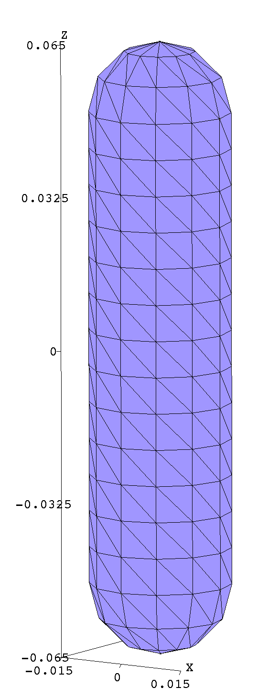

Mode frequencies and field patterns of resonant modes in gold nanorods
In this example, we use a combination of methods---including python scripts driving the scuff-em high-level interface as well as the scuff-spectrum command-line tool---to investigate resonant modes of isolated and twinned gold nanorods.
This example is inspired by the work of Jörn Zimmerling, who used a finite-difference solver and Krylov-subspace techniques to study resonant modes in single and paired nanorod geometries; see e.g. this paper:
- Zimmerling et al., "Efficient computation of the spontaneous decay rate of arbitrarily shaped 3D nanosized resonators: a Krylov model-order reduction approach," Appl. Phys. A. 122:158 (2016). DOI: 10.1007/s00339-016-9643-4
In contrast to the finite-difference/Krylov-subspace method of this paper, the scuff-em approach to resonant-mode problems is based on the Beyn method for nonlinear eigenproblems, which identifies eigenvalues as poles of a resolvent operator---which are in turn identified as residues of a certain contour integral in the complex plane, estimated by N-point numerical quadrature. (Under the hood, this amounts to solving some number of scattering problems at complex-valued frequencies---namely, the N quadrature points). We specify the contour to scuff-spectrum, and it reports the values of all resonant-mode frequencies (eigenvalues) detected inside the contour, together with (optional) visualizations or other information on the field patterns at each mode.
Following Zimmerling et al., we will consider both the case of a single nanorod ("monomer" configuration), in which case we expect a single nanoplasmonic resonance in the frequency range of interest, and a "dimer" configuration of two closely-spaced nanorods, for which we expect the single monomer resonant mode to split into two: a lower-frequency ("bonding") mode and a higher-frequency ("antibonding") mode.
The input files for this example may be found in the share/scuff-em/examples/NanorodResonantModes
subdirectory of your scuff-em installation.
(Note: The nanorods considered here have slightly different geometries than those considered by Zimmerling et al.---they are the same radius and height, but have rounded instead of flat end caps. Also, we use a slightly different dielectric function for gold. Thus, we don't expect results to match exactly quantitatively, but qualitative aspects should be similar.)
Nanorod surface mesh
GMSH geometry file describing an individual nanorod: Nanorod.geo.
Process with gmsh to produce coarse and moderately-fine meshes:
% gmsh -setnumber N 3 Nanorod.geo -2 -o Nanorod_648.msh % gmsh -setnumber N 5 Nanorod.geo -2 -o Nanorod_1860.msh % gmsh Nanorod_648.msh

Note that, in writing the .geo file, we have taken pains to ensure that the mesh
produced by gmsh
is highly structured (has lots of identical triangles), which massively reduces
the cost of scuff-em calculations due to
support for equivalent edge-pair detection in scuff-em
version 0.96 and later.
Initial coarse frequency sweep
scuff-spectrum can pinpoint eigenfrequencies
efficiently and with high accuracy, but it's useful to have at least
a rough estimate of the mode frequencies before we attempt to
define a contour containing them. Thus, again following
Zimmerling et al, before launching
scuff-spectrum runs we'll do a quick
frequency sweep to calculate the local density of states (LDOS)
at a point in the vicinity of the nanorod. (Recall that the LDOS
at a point x may be computed by solving a scattering calculation
in which the incident field is sourced by a point dipole at x,
then evaluating the scattered field at x.)
This could be done using the
scuff-ldos command-line tool,
but it's even easier to do it from a python script making
calls to the
scuff-em command-line tool.
This script is called NanorodLDOS.py,
and here's an excerpt of just the most salient bits; note that
the script contains a flag called Dimer, which, when True,
will define the geometry to contain two identical nanorods
separated by 50 nm:
Res="648" MeshFile="Nanorod_" + Res + ".msh"; Material="Gold" Dimer=False; Name = ("Nanorods" if Dimer else "Nanorod") + "_" + Res Solver=scuff.scuffSolver(Name) Solver.SetMediumPermittivity(2.25) # add first nanorod to geometry Solver.AddObject(MeshFile, Material, "Nanorod") # add second nanorod if we're doing the dimer Dimer=False; if Dimer: Transformation="DISPLACED 0 0.05 0" Solver.AddObject(MeshFile, Material, "Nanorod2", Transformation) # location of point dipole source, lying above one of the nanorods SourcePoint = [0.0, 0.0, 0.09] ################################################### # sweep frequency, compute LDOS ################################################### LDOSFile=open(Name + ".LDOS", "w") for Omega in OmegaRange: # re-compute system matrix for this frequency Solver.AssembleSystemMatrix(Omega) # solve 3 scattering problems to get electric LDOS at SourcePoint GEDiag=[0,0,0] for Mu in range(0,3): # create Mu-directed dipole source SourceOrientation=[0,0,0] SourceOrientation[Mu]=1 PS=scuff.PointSource(SourcePoint, SourceOrientation) # solve scattering problem Solver.Solve(PS) # get scattered E, H fields at source location and # accumulate E[Mu] component EH=Solver.GetFields(SourcePoint,"scattered") GEDiag[Mu]=EH[Mu] # write to file GETrace=sum(GEDiag) LDOSFile.write("%e %e %e " % (Omega,GETrace.real, GETrace.imag)) LDOSFile.write("%e %e " % (GEDiag[0].real,GEDiag[0].imag)) LDOSFile.write("%e %e " % (GEDiag[1].real,GEDiag[1].imag)) LDOSFile.write("%e %e\n" % (GEDiag[2].real,GEDiag[2].imag)) LDOSFile.flush() LDOSFile.close()
Running this script as is and with Dimer=True produces the
files Nanorod_648.LDOS and Nanorods_648.LDOS, which we plot
in gnuplot:
gnuplot> plot 'Nanorod_648.LDOS' u 1:3 t 'Monomer', 'Nanorods_648.LDOS' u 1:3 t 'Dimer'

So, this comports with our expectations: the monomer configuration has a single resonance near (where rad/sec is the default unit of angular frequency in scuff-em, in terms of which all frequencies are quoted below) which splits into a lower-frequency "bonding" and a higher-frequency "anti-bonding" mode in the dimer configuration.
Run scuff-spectrum to pinpoint frequency of monomer resonant mode
The ${SCUFF_PREFIX}/share/scuff-em/examples/NanorodResonantModes
directory contains a shell script called ComputeNanorodModes.sh
that runs scuff-spectrum
with various options for post-processing.
For the monomer, we run Beyn's algorithm with 14 quadrature points on a circular contour of radius centered at
% export OMP_NUM_THREADS=8 % export GOMP_CPU_AFFINITY="0-7" % ComputeNanorodModes.sh --Omega0 6.5-0.3i --RX 0.1 --RY 0.1 --NQ 14
This runs in 6 seconds on my laptop and produces several output files:
- a text file (
GoldNanorod_648.ModeFrequencies) reporting all eigenvalues found within the contour; in this case the algorithm finds one mode, at , resolved to 12 decimal places (more digits can be obtained by increasing the number of quadrature points).
#/home/homer/work/scuff-em-development-installation/bin/../bin/scuff-spectrum running on miho (07/05/18::11:50:09) # For contour w0=6.5+-0.3i, Rx=1.000000e-01, Ry=1.000000e-01, N=14, L=5: # re(w) im(w) estimated error in re(w), im(w) residual +6.531328e+00 -2.583246e-01 +7.798207e-13 +8.039625e-12 +1.650360e-18
- Several
.ppfiles that may be opened in gmsh to visualize field patterns. For example, here's a plot of the real part of , both on the nanorod surface and on some nearby visualization screens:

Run scuff-spectrum to pinpoint frequencies of dimer resonant modes
For the dimer, we run Beyn's algorithm over an elliptical contour centered at the same point as above but now of radii in the horizontal direction and 0.2 in the vertical direction, and with 30 quadrature points:
% ComputeNanorodModes.sh --Omega0 6.5-0.3i --RX 1.5 --RY 0.2 --NQ 30 --Dimer
Again this produces a text file (GoldNanorods_648.ModeFrequencies) stating
that the Beyn algorithm found 2 eigenvalues, one shifted downward
and narrowed to , and the other shifted upward
and broadened to , both frequencies being
resolved to roughly 12 decimal-place accuracy:
# For contour w0=6.5+-0.3i, Rx=1.500000e+00, Ry=2.000000e-01, N=30, L=5: # re(w) im(w) estimated error in re(w), im(w) residual +6.867448e+00 -4.560186e-01 +1.323386e-13 +3.055944e-12 +3.839727e-17 +5.953535e+00 -7.617430e-02 +1.891820e-13 +8.747864e-12 +1.240623e-08
We also get gmsh visualization files plotting field configurations:
Ey fields for the dimer "bonding" mode

Ey fields for the dimer "anti-bonding" mode